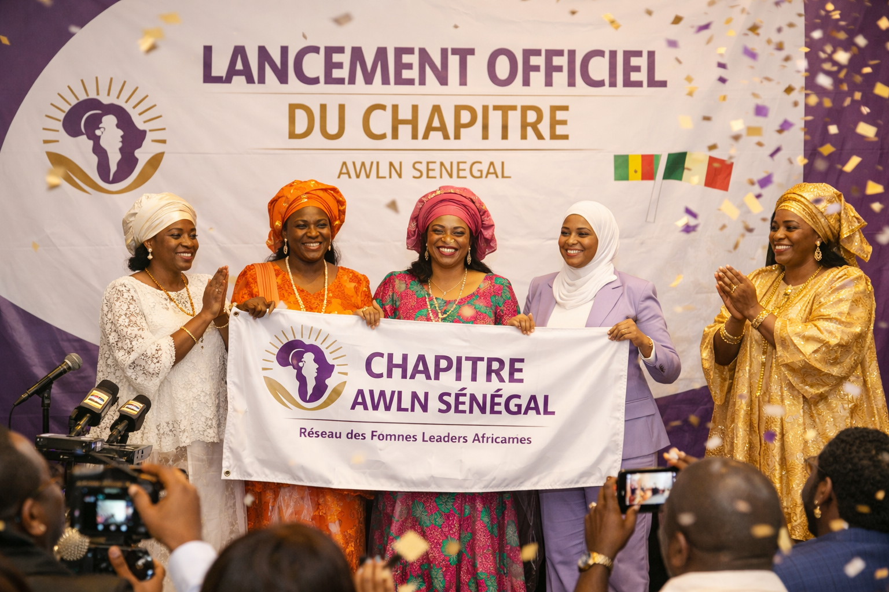
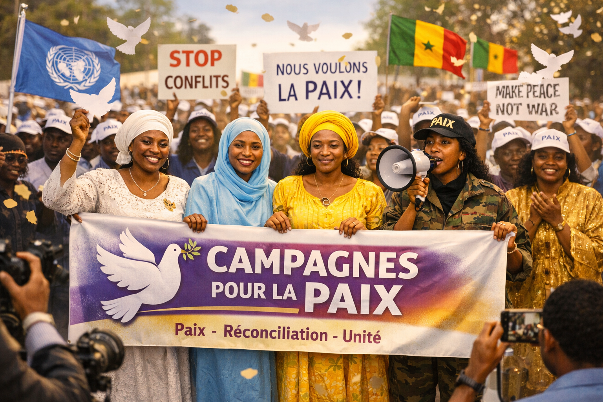
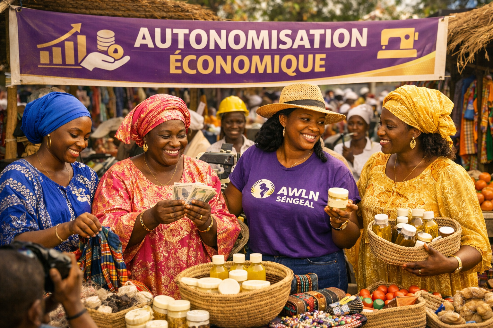

Depuis sa création, AWLN Sénégal a mené plusieurs actions majeures pour promouvoir le leadership féminin, la paix et l’autonomisation des femmes.

Le 9 juin 2022, AWLN Sénégal a été officiellement lancé à Dakar, en présence de leaders nationaux et internationaux.

Organisation de dialogues communautaires et sensibilisation pour la cohésion sociale et la résolution pacifique des conflits.

Formations et projets pour renforcer l’indépendance financière des femmes et soutenir leurs initiatives locales.